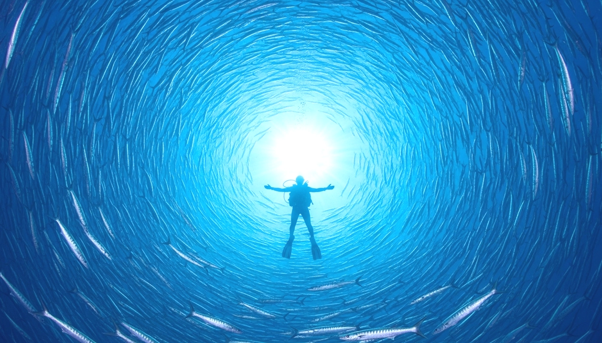

지금 이 시즌,
놓칠 수 없는 베스트 여행지
독보적인 시야와 생물 다양성, 압도적인 수중 경관을 기준으로 선정된 이번 달의 가장 인기 있는 목적지들을 확인하세요.
View More

일상의 무게를 내려놓고, 고요한 안식을 바다 한 가운데서 발견할 시간입니다.
미지의 아름다움과 마주할 준비가 되셨나요?
Visibility
Diversity
Safety
Accessibility
Temperature
Accommodation
Eco
Attractive
8가지 핵심 지표로 엄선한, 완벽한 다이빙.
시야와 상태계의 풍요로운 물은 물론,
수온과 안전, 접근성까지 종합하게 분석했습니다.
당신의 숙련도에 맞는 최적의 수중 세계를 경험해 보세요.
독보적인 시야와 생물 다양성, 압도적인 수중 경관을 기준으로 선정된 이번 달의 가장 인기 있는 목적지들을 확인하세요.
View More


전 세계 다이버들의 교육 성지로 불리는 코타오. 체계적인 시스템으로 안전과 가능성을 동시에 경험한 사이트입니다.

하루 입장 인원을 제한하여 더 도전적인 지형과 수중 파노라마를 만나는 곳. 기대한 무리의 스케일을 경험하세요.

야생의 밀도감과 안정적인 유도 다이빙을 함께 경험하는 포인트. 물결을 가르는 조합이 인상적인 코스입니다.

현존하는 어류 중 가장 거대한 몸집을 자랑하지만, 온순한 성향을 지닌 생명체입니다. 방어를 위한 이빨 구조는 작은 플랑크톤 섭취에 특화되어 있으며, 웅장한 유영으로 수중의 압도적인 존재감을 보여줍니다.
ⓒ Copyright by JinGanJang